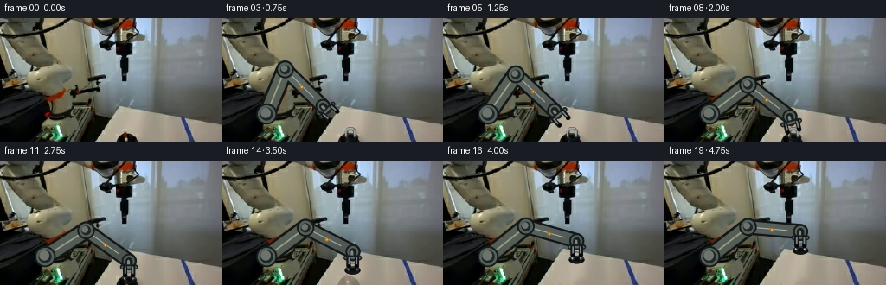
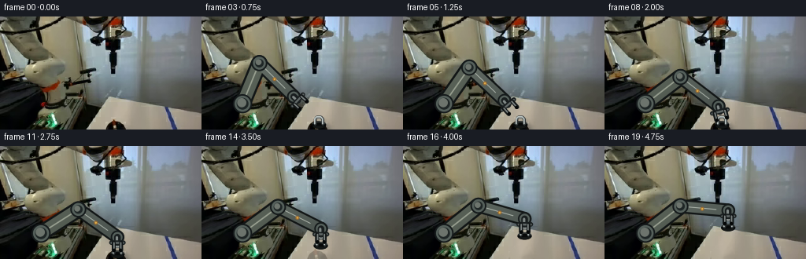
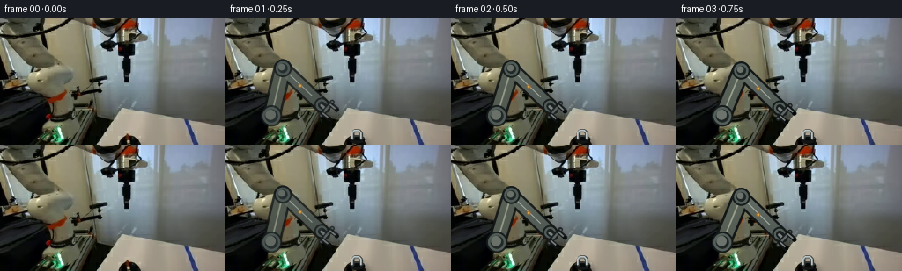

CODING AGENTS AS PIXEL WORLD MODELS
traex/GPT-5.6-Sol · common50_0012
点击播放 · 原生 RGB 像素
逐轮保存的候选
回放视频、检查图与代码变化。
每份候选均可单独播放。实际图片检查记录在下方工具轨迹中。
候选 01播放与检查图
点击播放 · 原生 RGB 像素

展开代码变化
--- 上一保存版本
+++ 本次保存版本
@@ -0,0 +1,221 @@
+from pathlib import Path
+import cv2
+import numpy as np
+from PIL import Image
+import artifact_io
+
+W, H = 256, 144
+CASE_DIR = Path(__file__).resolve().parent
+BASE = np.asarray(Image.open(CASE_DIR / "first_frame.png").convert("RGB"), dtype=np.uint8)
+assert BASE.shape == (H, W, 3)
+S = 3 # supersampling for clean, photographic edges
+
+
+def smooth(x):
+ x = float(np.clip(x, 0.0, 1.0))
+ return x*x*(3.0-2.0*x)
+
+
+def capsule_mask(a, b, radius, scale=S):
+ m = np.zeros((H*scale, W*scale), np.uint8)
+ aa = tuple(np.rint(np.asarray(a)*scale).astype(int))
+ bb = tuple(np.rint(np.asarray(b)*scale).astype(int))
+ cv2.line(m, aa, bb, 255, max(1, int(round(2*radius*scale))), cv2.LINE_AA)
+ return m
+
+
+def disk_mask(c, r, scale=S):
+ m = np.zeros((H*scale, W*scale), np.uint8)
+ cv2.circle(m, tuple(np.rint(np.asarray(c)*scale).astype(int)), int(round(r*scale)), 255, -1, cv2.LINE_AA)
+ return m
+
+
+def downmask(m):
+ return cv2.resize(m, (W, H), interpolation=cv2.INTER_AREA).astype(np.float32)/255.0
+
+
+def composite(frame, mask, color, opacity=1.0):
+ """Alpha-composite a flat RGB color through a supersampled mask."""
+ a = np.clip(downmask(mask)*opacity, 0, 1)[..., None]
+ return frame*(1-a) + np.asarray(color, np.float32)*a
+
+
+def gradient_composite(frame, mask, c0, c1, direction=(0.0, 1.0), opacity=1.0):
+ a = np.clip(downmask(mask)*opacity, 0, 1)[..., None]
+ yy, xx = np.mgrid[0:H, 0:W].astype(np.float32)
+ d = xx*direction[0] + yy*direction[1]
+ d = (d-d.min())/(d.max()-d.min()+1e-6)
+ col = np.asarray(c0)[None,None,:]*(1-d[...,None]) + np.asarray(c1)[None,None,:]*d[...,None]
+ return frame*(1-a) + col*a
+
+
+def line_mask(points, width, scale=S):
+ m = np.zeros((H*scale, W*scale), np.uint8)
+ pts = np.rint(np.asarray(points)*scale).astype(np.int32)
+ if len(pts) == 2:
+ cv2.line(m, tuple(pts[0]), tuple(pts[1]), 255, max(1,int(width*scale)), cv2.LINE_AA)
+ else:
+ cv2.polylines(m, [pts], False, 255, max(1,int(width*scale)), cv2.LINE_AA)
+ return m
+
+
+def ik_elbow(base, wrist, l1=56.0, l2=61.0):
+ """Fixed-length 2-link IK, choosing the stable elbow-above configuration."""
+ b = np.asarray(base, np.float32); p = np.asarray(wrist, np.float32)
+ v = p-b; d = float(np.linalg.norm(v)); d = np.clip(d, abs(l1-l2)+.01, l1+l2-.01)
+ u = v/(np.linalg.norm(v)+1e-8)
+ a = (l1*l1-l2*l2+d*d)/(2*d)
+ hh = np.sqrt(max(0.0, l1*l1-a*a))
+ perp = np.array([-u[1], u[0]], np.float32)
+ return b + a*u - hh*perp
+
+
+def add_shadow(frame, masks, opacity, blur=5, offset=(3,3)):
+ sm = np.zeros((H, W), np.float32)
+ for m in masks:
+ sm = np.maximum(sm, downmask(m))
+ M = np.float32([[1,0,offset[0]],[0,1,offset[1]]])
+ sm = cv2.warpAffine(sm, M, (W,H), borderMode=cv2.BORDER_CONSTANT)
+ sm = cv2.GaussianBlur(sm, (0,0), blur)
+ factor = 1.0 - np.clip(sm*opacity, 0, .55)
+ return frame*factor[...,None]
+
+
+def draw_stopper(frame, center, opacity=1.0, shadow=True):
+ """Rigid black rubber stopper with a brushed-steel D handle."""
+ cx, cy = center
+ # Soft contact shadow, becoming detached-looking naturally when lifted.
+ if shadow:
+ sh = disk_mask((cx+3, cy+3), 9.5)
+ frame = add_shadow(frame, [sh], .25*opacity, blur=3.2, offset=(1,1))
+ # Rubber plug: an outlined short cylinder, not a featureless dot.
+ body = np.zeros((H*S,W*S),np.uint8)
+ cv2.ellipse(body, (int(cx*S),int(cy*S)), (int(9*S),int(4.6*S)), 0,0,360,255,-1,cv2.LINE_AA)
+ frame = composite(frame, body, (7,9,9), opacity)
+ lower = np.zeros_like(body)
+ cv2.ellipse(lower, (int(cx*S),int((cy+1.4)*S)), (int(7.5*S),int(3.0*S)), 0,0,180,255,-1,cv2.LINE_AA)
+ frame = composite(frame, lower, (19,22,21), opacity)
+ rim = np.zeros_like(body)
+ cv2.ellipse(rim, (int(cx*S),int((cy-1.0)*S)), (int(8.2*S),int(3.0*S)), 0,190,350,255,max(1,int(1.2*S)),cv2.LINE_AA)
+ frame = composite(frame, rim, (50,55,53), opacity)
+ # Metal D-loop, with dark edge and a narrow specular edge.
+ looppts = [(cx-4.8,cy-1.0),(cx-4.8,cy-7.4),(cx-2.6,cy-10.0),(cx+2.8,cy-10.0),(cx+5.0,cy-7.3),(cx+5.0,cy-1.0)]
+ lm0 = line_mask(looppts, 3.2); frame = composite(frame,lm0,(47,52,53),opacity)
+ lm1 = line_mask([(x-.45,y-.45) for x,y in looppts],1.25); frame = composite(frame,lm1,(188,197,194),opacity)
+ lm2 = line_mask([(cx-3.9,cy-7.0),(cx-2.0,cy-8.7),(cx+2.4,cy-8.7)],.65)
+ frame = composite(frame,lm2,(238,242,236),.72*opacity)
+ return frame
+
+
+def draw_arm(frame, base, elbow, wrist, tool_dir, close, opacity=1.0, near_table=False):
+ """Render a rigid, fixed-length industrial arm and parallel-jaw gripper."""
+ b=np.asarray(base,float); e=np.asarray(elbow,float); w=np.asarray(wrist,float)
+ # Arm shadow is restricted to the working end, to avoid darkening the background wall.
+ if near_table:
+ sm1=capsule_mask(e,w,8.5); sm2=disk_mask(w,9)
+ frame=add_shadow(frame,[sm1,sm2],.13*opacity,blur=5.5,offset=(4,5))
+ # Black chassis silhouettes.
+ for a,p,r in [(b,e,10.2),(e,w,8.7)]:
+ frame=composite(frame,capsule_mask(a,p,r),(18,22,22),opacity)
+ # Rigid painted alloy shells, preserving constant widths and lengths.
+ frame=gradient_composite(frame,capsule_mask(b,e,7.6),(111,119,105),(55,64,59),(.45,.75),opacity)
+ frame=gradient_composite(frame,capsule_mask(e,w,6.25),(128,138,127),(49,57,55),(.35,.85),opacity)
+ # Long machined highlights locked to each link.
+ def inset_line(a,p,frac0=.14,frac1=.82):
+ a=np.asarray(a);p=np.asarray(p);return a+(p-a)*frac0,a+(p-a)*frac1
+ q0,q1=inset_line(b,e); frame=composite(frame,line_mask([q0,q1],1.15),(191,198,179),.62*opacity)
+ q0,q1=inset_line(e,w,.12,.75); frame=composite(frame,line_mask([q0,q1],.9),(202,210,199),.7*opacity)
+ # Joint housings are circular and therefore don't squash during articulation.
+ for c,r in [(b,12.0),(e,10.0),(w,8.2)]:
+ frame=composite(frame,disk_mask(c,r),(21,26,27),opacity)
+ frame=composite(frame,disk_mask(c,r-2.0),(85,96,91),opacity)
+ frame=composite(frame,disk_mask(c,r-4.8),(31,38,38),opacity)
+ frame=composite(frame,disk_mask((c[0]-1.1,c[1]-1.2),r-6.2),(142,150,139),.70*opacity)
+ # Small fixed warning/actuator panel on forearm.
+ v=w-e; vn=v/(np.linalg.norm(v)+1e-6); pp=np.array([-vn[1],vn[0]])
+ panel=(e*.54+w*.46)+pp*1.0
+ frame=composite(frame,disk_mask(panel,2.2),(161,106,43),.92*opacity)
+ frame=composite(frame,disk_mask(panel,1.0),(230,187,83),.90*opacity)
+
+ # Wrist-to-gripper stem follows one rigid tool vector.
+ td=np.asarray(tool_dir,float); td=td/(np.linalg.norm(td)+1e-8); side=np.array([-td[1],td[0]])
+ palm=w+td*7.0
+ frame=composite(frame,capsule_mask(w,palm,4.0),(25,30,31),opacity)
+ frame=composite(frame,capsule_mask(w+side*.8,palm+side*.8,1.2),(184,193,190),.65*opacity)
+ # Parallel jaw spacing closes around the metal loop, without bending fingers.
+ gap=(7.0*(1-close)+4.8*close)
+ bar0=palm-side*(gap+3); bar1=palm+side*(gap+3)
+ frame=composite(frame,capsule_mask(bar0,bar1,2.7),(26,31,32),opacity)
+ frame=composite(frame,capsule_mask(bar0+td*.2,bar1+td*.2,1.0),(144,153,151),.60*opacity)
+ flen=10.0
+ for sg in (-1,1):
+ root=palm+side*gap
+ if sg<0: root=palm-side*gap
+ tip=root+td*flen
+ frame=composite(frame,capsule_mask(root,tip,2.15),(18,22,23),opacity)
+ frame=composite(frame,capsule_mask(root-side*sg*.45,tip-side*sg*.45,0.72),(174,183,180),.68*opacity)
+ # inward hard fingertip pad
+ pad=tip-td*.3-side*sg*.75
+ frame=composite(frame,disk_mask(pad,1.9),(5,7,7),opacity)
+ return frame
+
+
+# Replacement table texture for the revealed spot under the picked object.
+# Inpainting is based solely on first-frame pixels surrounding that spot.
+inpaint_mask=np.zeros((H,W),np.uint8)
+cv2.ellipse(inpaint_mask,(149,139),(16,12),0,0,360,255,-1)
+cv2.rectangle(inpaint_mask,(141,126),(158,141),255,-1)
+base_bgr=cv2.cvtColor(BASE,cv2.COLOR_RGB2BGR)
+TABLE_FILL=cv2.cvtColor(cv2.inpaint(base_bgr,inpaint_mask,5,cv2.INPAINT_TELEA),cv2.COLOR_BGR2RGB).astype(np.float32)
+reveal=cv2.GaussianBlur(inpaint_mask.astype(np.float32)/255.0,(0,0),1.2)[...,None]
+
+frames=[]
+base_anchor=np.array((52.0,111.0))
+start_wrist=np.array((108.0,98.0))
+grip_wrist=np.array((149.0,116.0))
+lift_wrist=np.array((157.0,82.0))
+object_home=np.array((149.0,138.0))
+
+for i in range(20):
+ if i==0:
+ frames.append(BASE.copy())
+ continue
+ f=BASE.astype(np.float32)
+ # Approach occupies the first 2.5 s; closing is visible and deliberate.
+ ap=smooth(min(i,10)/10.0)
+ if i<=10:
+ wrist=start_wrist*(1-ap)+grip_wrist*ap
+ lift=0.0
+ else:
+ lift=smooth((i-11)/8.0)
+ wrist=grip_wrist*(1-lift)+lift_wrist*lift
+ elbow=ik_elbow(base_anchor,wrist)
+ close=smooth((i-8)/3.0)
+ # Tool points toward the handle while approaching and remains vertical while lifting.
+ desired=(object_home-np.array((0.0,7.0))-wrist)
+ if np.linalg.norm(desired)<2: desired=np.array((0.0,1.0))
+ tool_dir=desired/np.linalg.norm(desired)
+ if i>=11: tool_dir=np.array((0.0,1.0))
+
+ # Once the plug leaves, reveal a clean, stationary white work surface beneath it.
+ if i>=12:
+ clear=np.clip(.30+1.35*lift,0,1)
+ f=f*(1-reveal*clear)+TABLE_FILL*(reveal*clear)
+
+ # Source object remains at its true first-frame location until actual pickup.
+ if i<=11:
+ f=draw_stopper(f,object_home,opacity=.74,shadow=True)
+ obj_center=object_home
+ else:
+ # Attached rigidly to gripper: constant 22 px wrist-to-plug offset.
+ obj_center=np.array((wrist[0],wrist[1]+22.0))
+ f=draw_stopper(f,obj_center,opacity=1.0,shadow=(lift<.22))
+
+ # Full solidity after one transition frame; no camera motion or arm deformation.
+ arm_op=.82 if i==1 else (0.94 if i==2 else 1.0)
+ f=draw_arm(f,base_anchor,elbow,wrist,tool_dir,close,arm_op,near_table=(i>=6))
+ frames.append(np.clip(np.rint(f),0,255).astype(np.uint8))
+
+frames=np.stack(frames,axis=0)
+assert np.array_equal(frames[0],BASE)
+artifact_io.save(frames, CASE_DIR)
候选 02播放与检查图
点击播放 · 原生 RGB 像素


展开代码变化
--- 上一保存版本
+++ 本次保存版本
@@ -204,7 +204,7 @@
# Source object remains at its true first-frame location until actual pickup.
if i<=11:
- f=draw_stopper(f,object_home,opacity=.74,shadow=True)
+ f=draw_stopper(f,object_home,opacity=1.0,shadow=True)
obj_center=object_home
else:
# Attached rigidly to gripper: constant 22 px wrist-to-plug offset.
可观测工具轨迹
实际执行的命令与返回图片。
命令 1exit 0
/bin/bash -lc "cat GENERATION_RULES.md && printf '\\n---PROMPT---\\n' && cat prompt.txt"
命令 2exit 1
/bin/bash -lc "find . -maxdepth 2 -type f -printf '%p\\n' | sort && printf '\\n---TOOLS---\\n' && command -v ffmpeg && command -v python3 && python3 - <<'PY'
from PIL import Image
im=Image.open('first_frame.png')
print(im.mode, im.size)
PY"命令 3exit 0
/bin/bash -lc "cat task_spec.json && printf '\\n---artifact_io---\\n' && sed -n '1,240p' artifact_io.py"
命令 4exit 0
/bin/bash -lc "python3 - <<'PY'
from PIL import Image
import numpy as np
im=np.array(Image.open('first_frame.png').convert('RGB'))
print('shape',im.shape,'dtype',im.dtype)
print('channel min max mean std')
for c in range(3): print(c,im[...,c].min(),im[...,c].max(),im[...,c].mean(),im[...,c].std())
# quantized dominant bins
q=(im//16)*16
from collections import Counter
for rgb,n in Counter(map(tuple,q.reshape(-1,3))).most_common(30):print(rgb,n)
PY"命令 5exit 0
/bin/bash -lc "python3 - <<'PY'
from PIL import Image
import numpy as np
im=np.array(Image.open('first_frame.png').convert('RGB'))
# ascii grayscale 2x2 average, 128x72
chars='@%#*+=-:. '
g=im.mean(2)
for y in range(0,144,3):
print(''.join(chars[min(9,int(g[y:y+3,x:x+2].mean()/256*10))] for x in range(0,256,2)))
PY"命令 6exit 0
/bin/bash -lc "python3 - <<'PY'
from PIL import Image
import numpy as np
im=np.array(Image.open('first_frame.png').convert('RGB'))
# Print 8x8 blocks average as grayscale level 0-9 and hue letter
for mode in ['gray','rgb']:
print('\\n',mode)
for y in range(0,144,8):
row=''
for x in range(0,256,8):
p=im[y:y+8,x:x+8].mean((0,1)); v=p.mean()
if mode=='gray': row+=str(int(np.clip(v//26,0,9)))
else:
mx=p.max();mn=p.min()
if mx-mn<8: c='K' if mx<60 else ('w' if mx>190 else 'g')
else: c='R' if p[0]==mx else ('G' if p[1]==mx else 'B')
row+=c
print(f'{y:3}',row)
# per block rgb table 16x16
print('\\n16-block RGB')
for y in range(0,144,16):
print('y',y, ['%02x%02x%02x'%tuple(im[y:y+16,x:x+16].mean((0,1)).astype(int)) for x in range(0,256,16)])
PY"命令 7exit 0
/bin/bash -lc "python3 - <<'PY'
try:
import cv2; print('cv2',cv2.__version__)
except Exception as e:print('no cv2',e)
try:
import scipy; print('scipy',scipy.__version__)
except Exception as e:print('no scipy',e)
PY
python3 - <<'PY'
from PIL import Image
import numpy as np
from scipy.ndimage import sobel
a=np.array(Image.open('first_frame.png').convert('RGB')).astype(float)
g=a.mean(2); e=np.hypot(sobel(g,0),sobel(g,1))
# edge strength block means chars
ch=' .:-=+*#%@'
for y in range(0,144,3):
print(''.join(ch[min(9,int(e[y:y+3,x:x+2].mean()/350*10))] for x in range(0,256,2)))
PY"命令 8exit 0
/bin/bash -lc "python3 - <<'PY'
from PIL import Image
import numpy as np
from scipy import ndimage
im=np.array(Image.open('first_frame.png').convert('RGB')); g=im.mean(2)
for th in [15,25,35,45,55,65,75,90]:
m=g<th; lab,n=ndimage.label(m)
objs=[]
for i in range(1,n+1):
yy,xx=np.where(lab==i); s=len(xx)
if s>=10:objs.append((s,xx.min(),yy.min(),xx.max(),yy.max(),round(g[lab==i].mean(),1)))
print('\\nth',th,'pixels',m.sum(),'components',sorted(objs,reverse=True)[:20])
PY"命令 9exit 0
/bin/bash -lc "python3 - <<'PY'
import cv2,numpy as np
from PIL import Image
im=cv2.imread('first_frame.png')
g=cv2.cvtColor(im,cv2.COLOR_BGR2GRAY)
e=cv2.Canny(g,80,160)
cs,_=cv2.findContours(e,cv2.RETR_LIST,cv2.CHAIN_APPROX_SIMPLE)
for c in sorted(cs,key=cv2.contourArea,reverse=True)[:80]:
x,y,w,h=cv2.boundingRect(c); a=cv2.contourArea(c)
print(f'a={a:7.1f} bbox={x:3},{y:3} {w:3}x{h:3}')
PY"命令 10exit 0
/bin/bash -lc "python3 - <<'PY'
from PIL import Image
import numpy as np
im=np.array(Image.open('first_frame.png').convert('RGB')); g=im.mean(2)
# chars dark to bright in selected regions, 2x2 avg coordinates headers
ch=' .,:;irsXA253hMHGS#9B&@'
for (x0,y0,x1,y1,s) in [(0,0,180,100,2),(70,65,256,144,1),(120,80,256,144,1)]:
print('\\nROI',x0,y0,x1,y1,'scale',s)
for y in range(y0,y1,s):
row=''
for x in range(x0,x1,s):
v=g[y:y+s,x:x+s].mean(); row+=ch[min(len(ch)-1,int(v/256*len(ch)))]
print(f'{y:03} {row}')
PY"命令 11exit 0
/bin/bash -lc "python3 - <<'PY'
from PIL import Image
import numpy as np
from scipy import ndimage
im=np.array(Image.open('first_frame.png').convert('RGB')); g=im.mean(2); mx=im.max(2); mn=im.min(2); sat=mx-mn
for name,m in [('bright',g>190),('spec',g>220),('dark',g<40),('neutral_dark',(g<80)&(sat<15)),('blue',(im[:,:,2]-im[:,:,0]>25)),('red',(im[:,:,0]-im[:,:,2]>25))]:
lab,n=ndimage.label(m)
arr=[]
for i in range(1,n+1):
yy,xx=np.where(lab==i)
if len(xx)>=4: arr.append((len(xx),int(xx.min()),int(yy.min()),int(xx.max()),int(yy.max()),tuple(np.round(im[lab==i].mean(0)).astype(int))))
print('\\n',name,m.sum())
for o in sorted(arr,reverse=True)[:30]:print(o)
# exact samples grid 16 step lower area
print('\\nSamples')
for y in range(80,145,8):
print(y, ['%3d/%3d/%3d'%tuple(im[min(y,143),x]) for x in range(96,256,8)])
PY"命令 12exit 0
/bin/bash -lc "python3 - <<'PY'
from PIL import Image
import numpy as np
from scipy.ndimage import label
im=np.array(Image.open('first_frame.png').convert('RGB')); g=im.mean(2)
# runs per row threshold
for y in range(0,144,4):
for th in [30,60,100,140,180]:
b=g[y]<th; z=np.r_[False,b,False]; starts=np.where(z[1:]&~z[:-1])[0]; ends=np.where(~z[1:]&z[:-1])[0]-1
runs=[(a,b) for a,b in zip(starts,ends) if b-a>=3]
if th==60: rs=runs
print(y,rs)
# RGB and gray run profiles columns of suspect
for x in [0,20,40,60,80,100,110,120,130,140,150,160,170,180,200,220,240,255]:
print('x',x,'gray by 4', ''.join('0123456789'[min(9,int(g[y:y+4,x].mean()//26))] for y in range(0,144,4)))
PY"命令 13exit 0
/bin/bash -lc "python3 - <<'PY'
from PIL import Image
import numpy as np
im=np.array(Image.open('first_frame.png').convert('RGB')); g=im.mean(2)
ch=' .,:;irsXA253hMHGS#9B&@'
for y in range(100,144):
s=''.join(ch[min(len(ch)-1,int(g[y,x]/256*len(ch)))] for x in range(70,180))
print(f'{y:03} {s}')
print('\\nRGB target')
for y in range(120,144):
print(y,' '.join('%02x%02x%02x'%tuple(im[y,x]) for x in range(125,170)))
PY"命令 14exit 0
/bin/bash -lc "python3 - <<'PY'
from PIL import Image
import numpy as np
im=np.array(Image.open('first_frame.png').convert('RGB')); g=im.mean(2)
ch=' .,:;irsXA253hMHGS#9B&@'
for x0,x1 in [(0,90),(80,135),(125,180),(175,230),(210,256)]:
print('\\nROI',x0,x1)
for y in range(90,144): print(f'{y:03} '+''.join(ch[min(len(ch)-1,int(g[y,x]/256*len(ch)))] for x in range(x0,x1)))
PY"命令 15exit 0
/bin/bash -lc "python3 - <<'PY'
from PIL import Image
import numpy as np
im=np.array(Image.open('first_frame.png').convert('RGB'))
for roi in [(130,100,175,144),(195,105,240,144),(50,110,90,144),(80,70,125,120)]:
x0,y0,x1,y1=roi
print('\\n',roi)
# grayscale values every pixel as hex-ish level 0-f based luminance
g=im.mean(2)
chars='0123456789abcdef'
for y in range(y0,y1): print(f'{y:3} '+''.join(chars[min(15,int(g[y,x]/16))] for x in range(x0,x1)))
# edge local residual high pass maybe
PY"命令 16exit 0
/bin/bash -lc "python3 - <<'PY'
import numpy as np
from PIL import Image
im=np.array(Image.open('first_frame.png').convert('RGB'));g=im.mean(2)
for roi in [(130,125,165,144),(200,108,235,144),(55,115,82,144)]:
x0,y0,x1,y1=roi;print('\\nROI',roi)
# color categories K dark, w table tan/white, S gray, b blue, r red, g green
for y in range(y0,y1):
st=''
for x in range(x0,x1):
r,gg,b=map(int,im[y,x]); v=(r+gg+b)/3
if v<25:c='K'
elif v<55:c='k'
elif v<85:c='d'
elif v<115:c='m'
elif v<145:c='l'
elif v<180:c='W'
else:c='O'
if r-b>35 and v<150:c='R'
elif gg-r>35 and v<150:c='G'
elif b-r>35 and v<150:c='B'
st+=c
print(f'{y:3} {st}')
PY"命令 17exit 0
/bin/bash -lc "cat > generate.py <<'PY'
from pathlib import Path
import cv2
import numpy as np
from PIL import Image
import artifact_io
W, H = 256, 144
CASE_DIR = Path(__file__).resolve().parent
BASE = np.asarray(Image.open(CASE_DIR / \"first_frame.png\").convert(\"RGB\"), dtype=np.uint8)
assert BASE.shape == (H, W, 3)
S = 3 # supersampling for clean, photographic edges
def smooth(x):
x = float(np.clip(x, 0.0, 1.0))
return x*x*(3.0-2.0*x)
def capsule_mask(a, b, radius, scale=S):
m = np.zeros((H*scale, W*scale), np.uint8)
aa = tuple(np.rint(np.asarray(a)*scale).astype(int))
bb = tuple(np.rint(np.asarray(b)*scale).astype(int))
cv2.line(m, aa, bb, 255, max(1, int(round(2*radius*scale))), cv2.LINE_AA)
return m
def disk_mask(c, r, scale=S):
m = np.zeros((H*scale, W*scale), np.uint8)
cv2.circle(m, tuple(np.rint(np.asarray(c)*scale).astype(int)), int(round(r*scale)), 255, -1, cv2.LINE_AA)
return m
def downmask(m):
return cv2.resize(m, (W, H), interpolation=cv2.INTER_AREA).astype(np.float32)/255.0
def composite(frame, mask, color, opacity=1.0):
\"\"\"Alpha-composite a flat RGB color through a supersampled mask.\"\"\"
a = np.clip(downmask(mask)*opacity, 0, 1)[..., None]
return frame*(1-a) + np.asarray(color, np.float32)*a
def gradient_composite(frame, mask, c0, c1, direction=(0.0, 1.0), opacity=1.0):
a = np.clip(downmask(mask)*opacity, 0, 1)[..., None]
yy, xx = np.mgrid[0:H, 0:W].astype(np.float32)
d = xx*direction[0] + yy*direction[1]
d = (d-d.min())/(d.max()-d.min()+1e-6)
col = np.asarray(c0)[None,None,:]*(1-d[...,None]) + np.asarray(c1)[None,None,:]*d[...,None]
return frame*(1-a) + col*a
def line_mask(points, width, scale=S):
m = np.zeros((H*scale, W*scale), np.uint8)
pts = np.rint(np.asarray(points)*scale).astype(np.int32)
if len(pts) == 2:
cv2.line(m, tuple(pts[0]), tuple(pts[1]), 255, max(1,int(width*scale)), cv2.LINE_AA)
else:
cv2.polylines(m, [pts], False, 255, max(1,int(width*scale)), cv2.LINE_AA)
return m
def ik_elbow(base, wrist, l1=56.0, l2=61.0):
\"\"\"Fixed-length 2-link IK, choosing the stable elbow-above configuration.\"\"\"
b = np.asarray(base, np.float32); p = np.asarray(wrist, np.float32)
v = p-b; d = float(np.linalg.norm(v)); d = np.clip(d, abs(l1-l2)+.01, l1+l2-.01)
u = v/(np.linalg.norm(v)+1e-8)
a = (l1*l1-l2*l2+d*d)/(2*d)
hh = np.sqrt(max(0.0, l1*l1-a*a))
perp = np.array([-u[1], u[0]], np.float32)
return b + a*u - hh*perp
def add_shadow(frame, masks, opacity, blur=5, offset=(3,3)):
sm = np.zeros((H, W), np.float32)
for m in masks:
sm = np.maximum(sm, downmask(m))
M = np.float32([[1,0,offset[0]],[0,1,offset[1]]])
sm = cv2.warpAffine(sm, M, (W,H), borderMode=cv2.BORDER_CONSTANT)
sm = cv2.GaussianBlur(sm, (0,0), blur)
factor = 1.0 - np.clip(sm*opacity, 0, .55)
return frame*factor[...,None]
def draw_stopper(frame, center, opacity=1.0, shadow=True):
\"\"\"Rigid black rubber stopper with a brushed-steel D handle.\"\"\"
cx, cy = center
# Soft contact shadow, becoming detached-looking naturally when lifted.
if shadow:
sh = disk_mask((cx+3, cy+3), 9.5)
frame = add_shadow(frame, [sh], .25*opacity, blur=3.2, offset=(1,1))
# Rubber plug: an outlined short cylinder, not a featureless dot.
body = np.zeros((H*S,W*S),np.uint8)
cv2.ellipse(body, (int(cx*S),int(cy*S)), (int(9*S),int(4.6*S)), 0,0,360,255,-1,cv2.LINE_AA)
frame = composite(frame, body, (7,9,9), opacity)
lower = np.zeros_like(body)
cv2.ellipse(lower, (int(cx*S),int((cy+1.4)*S)), (int(7.5*S),int(3.0*S)), 0,0,180,255,-1,cv2.LINE_AA)
frame = composite(frame, lower, (19,22,21), opacity)
rim = np.zeros_like(body)
cv2.ellipse(rim, (int(cx*S),int((cy-1.0)*S)), (int(8.2*S),int(3.0*S)), 0,190,350,255,max(1,int(1.2*S)),cv2.LINE_AA)
frame = composite(frame, rim, (50,55,53), opacity)
# Metal D-loop, with dark edge and a narrow specular edge.
looppts = [(cx-4.8,cy-1.0),(cx-4.8,cy-7.4),(cx-2.6,cy-10.0),(cx+2.8,cy-10.0),(cx+5.0,cy-7.3),(cx+5.0,cy-1.0)]
lm0 = line_mask(looppts, 3.2); frame = composite(frame,lm0,(47,52,53),opacity)
lm1 = line_mask([(x-.45,y-.45) for x,y in looppts],1.25); frame = composite(frame,lm1,(188,197,194),opacity)
lm2 = line_mask([(cx-3.9,cy-7.0),(cx-2.0,cy-8.7),(cx+2.4,cy-8.7)],.65)
frame = composite(frame,lm2,(238,242,236),.72*opacity)
return frame
def draw_arm(frame, base, elbow, wrist, tool_dir, close, opacity=1.0, near_table=False):
\"\"\"Render a rigid, fixed-length industrial arm and parallel-jaw gripper.\"\"\"
b=np.asarray(base,float); e=np.asarray(elbow,float); w=np.asarray(wrist,float)
# Arm shadow is restricted to the working end, to avoid darkening the background wall.
if near_table:
sm1=capsule_mask(e,w,8.5); sm2=disk_mask(w,9)
frame=add_shadow(frame,[sm1,sm2],.13*opacity,blur=5.5,offset=(4,5))
# Black chassis silhouettes.
for a,p,r in [(b,e,10.2),(e,w,8.7)]:
frame=composite(frame,capsule_mask(a,p,r),(18,22,22),opacity)
# Rigid painted alloy shells, preserving constant widths and lengths.
frame=gradient_composite(frame,capsule_mask(b,e,7.6),(111,119,105),(55,64,59),(.45,.75),opacity)
frame=gradient_composite(frame,capsule_mask(e,w,6.25),(128,138,127),(49,57,55),(.35,.85),opacity)
# Long machined highlights locked to each link.
def inset_line(a,p,frac0=.14,frac1=.82):
a=np.asarray(a);p=np.asarray(p);return a+(p-a)*frac0,a+(p-a)*frac1
q0,q1=inset_line(b,e); frame=composite(frame,line_mask([q0,q1],1.15),(191,198,179),.62*opacity)
q0,q1=inset_line(e,w,.12,.75); frame=composite(frame,line_mask([q0,q1],.9),(202,210,199),.7*opacity)
# Joint housings are circular and therefore don't squash during articulation.
for c,r in [(b,12.0),(e,10.0),(w,8.2)]:
frame=composite(frame,disk_mask(c,r),(21,26,27),opacity)
frame=composite(frame,disk_mask(c,r-2.0),(85,96,91),opacity)
frame=composite(frame,disk_mask(c,r-4.8),(31,38,38),opacity)
frame=composite(frame,disk_mask((c[0]-1.1,c[1]-1.2),r-6.2),(142,150,139),.70*opacity)
# Small fixed warning/actuator panel on forearm.
v=w-e; vn=v/(np.linalg.norm(v)+1e-6); pp=np.array([-vn[1],vn[0]])
panel=(e*.54+w*.46)+pp*1.0
frame=composite(frame,disk_mask(panel,2.2),(161,106,43),.92*opacity)
frame=composite(frame,disk_mask(panel,1.0),(230,187,83),.90*opacity)
# Wrist-to-gripper stem follows one rigid tool vector.
td=np.asarray(tool_dir,float); td=td/(np.linalg.norm(td)+1e-8); side=np.array([-td[1],td[0]])
palm=w+td*7.0
frame=composite(frame,capsule_mask(w,palm,4.0),(25,30,31),opacity)
frame=composite(frame,capsule_mask(w+side*.8,palm+side*.8,1.2),(184,193,190),.65*opacity)
# Parallel jaw spacing closes around the metal loop, without bending fingers.
gap=(7.0*(1-close)+4.8*close)
bar0=palm-side*(gap+3); bar1=palm+side*(gap+3)
frame=composite(frame,capsule_mask(bar0,bar1,2.7),(26,31,32),opacity)
frame=composite(frame,capsule_mask(bar0+td*.2,bar1+td*.2,1.0),(144,153,151),.60*opacity)
flen=10.0
for sg in (-1,1):
root=palm+side*gap
if sg<0: root=palm-side*gap
tip=root+td*flen
frame=composite(frame,capsule_mask(root,tip,2.15),(18,22,23),opacity)
frame=composite(frame,capsule_mask(root-side*sg*.45,tip-side*sg*.45,0.72),(174,183,180),.68*opacity)
# inward hard fingertip pad
pad=tip-td*.3-side*sg*.75
frame=composite(frame,disk_mask(pad,1.9),(5,7,7),opacity)
return frame
# Replacement table texture for the revealed spot under the picked object.
# Inpainting is based solely on first-frame pixels surrounding that spot.
inpaint_mask=np.zeros((H,W),np.uint8)
cv2.ellipse(inpaint_mask,(149,139),(16,12),0,0,360,255,-1)
cv2.rectangle(inpaint_mask,(141,126),(158,141),255,-1)
base_bgr=cv2.cvtColor(BASE,cv2.COLOR_RGB2BGR)
TABLE_FILL=cv2.cvtColor(cv2.inpaint(base_bgr,inpaint_mask,5,cv2.INPAINT_TELEA),cv2.COLOR_BGR2RGB).astype(np.float32)
reveal=cv2.GaussianBlur(inpaint_mask.astype(np.float32)/255.0,(0,0),1.2)[...,None]
frames=[]
base_anchor=np.array((52.0,111.0))
start_wrist=np.array((108.0,98.0))
grip_wrist=np.array((149.0,116.0))
lift_wrist=np.array((157.0,82.0))
object_home=np.array((149.0,138.0))
for i in range(20):
if i==0:
frames.append(BASE.copy())
continue
f=BASE.astype(np.float32)
# Approach occupies the first 2.5 s; closing is visible and deliberate.
ap=smooth(min(i,10)/10.0)
if i<=10:
wrist=start_wrist*(1-ap)+grip_wrist*ap
lift=0.0
else:
lift=smooth((i-11)/8.0)
wrist=grip_wrist*(1-lift)+lift_wrist*lift
elbow=ik_elbow(base_anchor,wrist)
close=smooth((i-8)/3.0)
# Tool points toward the handle while approaching and remains vertical while lifting.
desired=(object_home-np.array((0.0,7.0))-wrist)
if np.linalg.norm(desired)<2: desired=np.array((0.0,1.0))
tool_dir=desired/np.linalg.norm(desired)
if i>=11: tool_dir=np.array((0.0,1.0))
# Once the plug leaves, reveal a clean, stationary white work surface beneath it.
if i>=12:
clear=np.clip(.30+1.35*lift,0,1)
f=f*(1-reveal*clear)+TABLE_FILL*(reveal*clear)
# Source object remains at its true first-frame location until actual pickup.
if i<=11:
f=draw_stopper(f,object_home,opacity=.74,shadow=True)
obj_center=object_home
else:
# Attached rigidly to gripper: constant 22 px wrist-to-plug offset.
obj_center=np.array((wrist[0],wrist[1]+22.0))
f=draw_stopper(f,obj_center,opacity=1.0,shadow=(lift<.22))
# Full solidity after one transition frame; no camera motion or arm deformation.
arm_op=.82 if i==1 else (0.94 if i==2 else 1.0)
f=draw_arm(f,base_anchor,elbow,wrist,tool_dir,close,arm_op,near_table=(i>=6))
frames.append(np.clip(np.rint(f),0,255).astype(np.uint8))
frames=np.stack(frames,axis=0)
assert np.array_equal(frames[0],BASE)
artifact_io.save(frames, CASE_DIR)
PY
python3 generate.py
python3 - <<'PY'
import numpy as np
from PIL import Image
z=np.load('pixels.npz')['pixels']
print('packed',z.shape,z.dtype)
ims=np.stack([np.array(Image.open(f'frames/{i:02d}.png')) for i in range(20)])
print('frames',ims.shape,ims.dtype,'f0 exact',np.array_equal(ims[0],np.array(Image.open('first_frame.png').convert('RGB'))))
for i in range(1,20): print(i, np.mean(np.abs(ims[i].astype(float)-ims[i-1].astype(float))), np.count_nonzero(np.any(ims[i]"'!=ims[i-1],axis=2)))
PY'命令 18exit 0
/bin/bash -lc "python3 - <<'PY'
from PIL import Image
import numpy as np
# inspection-like ASCII frames cropped/all, dark->bright
ch='@%#*+=-:. '
for i in [0,1,3,6,9,10,11,12,14,16,19]:
im=np.array(Image.open(f'frames/{i:02d}.png')).mean(2)
print('\\nFRAME',i)
for y in range(0,144,4):
print(''.join(ch[min(9,int(im[y:y+4,x:x+4].mean()/256*10))] for x in range(0,256,4)))
PY"命令 19exit 0
/bin/bash -lc "python3 - <<'PY'
p='generate.py'
s=open(p).read().replace('f=draw_stopper(f,object_home,opacity=.74,shadow=True)','f=draw_stopper(f,object_home,opacity=1.0,shadow=True)')
open(p,'w').write(s)
PY
python3 generate.py
python3 - <<'PY'
from PIL import Image
import numpy as np, json, pathlib
base=np.array(Image.open('first_frame.png').convert('RGB'))
fr=[]
for i in range(20):
a=np.array(Image.open(f'frames/{i:02d}.png'))
assert a.shape==(144,256,3) and a.dtype==np.uint8
fr.append(a)
assert np.array_equal(fr[0],base)
z=np.load('pixels.npz')['pixels']
assert z.shape==(144,256,20) and z.dtype==np.uint32
# decode packed archive to verify exact output
arr=np.stack(fr)
p=((arr[...,0].astype(np.uint32)<<16)|(arr[...,1].astype(np.uint32)<<8)|arr[...,2]).transpose(1,2,0)
assert np.array_equal(z,p)
print('validated: 20 RGB frames, frame 00 exact, packed artifact exact')
print('outputs:',[(p.name,p.stat().st_size) for p in [pathlib.Path('pixels.npz'),pathlib.Path('index.html'),pathlib.Path('inspection.png')]])
PY"保存候选 2 份；完成命令 19 次；可验证图片返回 0 张。原始 API 响应与完整日志保留在本地。